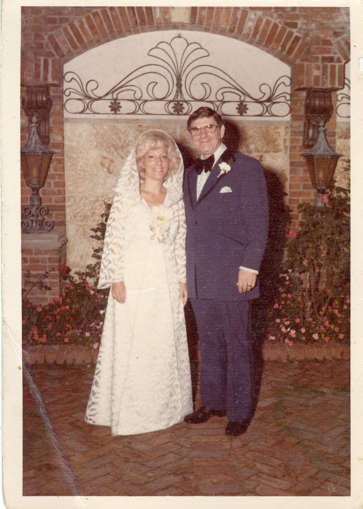
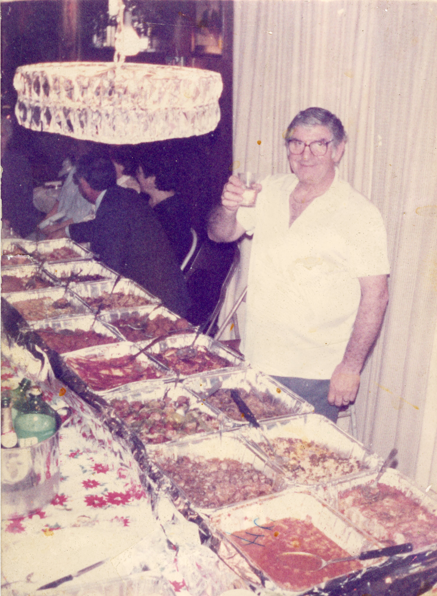

O & P
Ottavia and Pasquale
Traditional Italian Cuisine
25 Main St | East Greenwich, RI | (401)-473-6448
History
Ottavia and Pasquale DeCesare were loving people to the whole world, spreading their love for people and food by hosting large dinners and always having an open door. They valued a life of happiness and full bellies. They passed their cooking skills down to their son who now carries on the traditional meals to his family.
O&P was started in 2018 after the passing of Ottavia and Patrick as a way to carry on their memory, ensuring that they would never truly be gone so long as their recipes are able to bring joy to other people. Head Chef Nick DeCesare, their son, hopes to bring O&P to life through food, music, and family, just as his parents were able to do in their lifetimes.


Make a Reservation
Hours:
Sunday Closed
Monday 2-10
Tuesday 2-10
Wednesday 2-6, 7-11
Thursday 2-10
Friday 2-12
Saturday 2-12
Menu
ANTIPASTI
Carpaccio Piemontese
Assorted Baked Clams
Beets Siciliana
Octopus Pizzaiolo
Calamari Marco
Homemade Pepperoni
Zuppa di Posillipo
Prosciutto & Mozzarella
ZUPPA E INSALATE
Wedding Soup
Gorgonzola
House Chopped
Casar ala ZZ
PASTA
Tortelini al Ragu
Fettuccine con Funghi
Lobster Ravioli
Cannelloni Agnello
Linguini Vongole
Spicy Rigatoni Vodka
Lasagna Bianco
Orecchiette Fagioli
PESCI
Bass Alison
Jumbo Shrimp Scampi
Dover Piccata
Salmon Oreganata
Whole Branzino
Scallops Marechiara
CARNI
Veal Marsala
Chicken Massimo
Veal Parmesan
Chicken Scarpariello
Pork Chop & Peppers
Ribeye Diana
Double Lamb Chops
Cherry Pepper Ribs
CONTORNI
Broccoli Rabe
Potatoes Louie
Funghi Trifolati
Squash Agrodolce
Artichoke Hearts